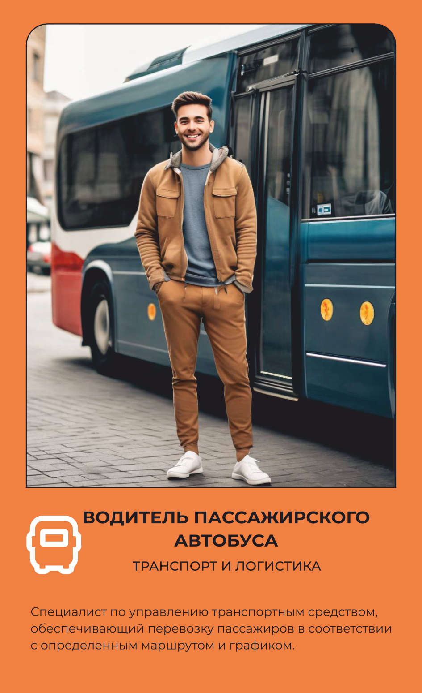

Водитель пассажирского автобуса
Везёт людей по маршруту и отвечает за их безопасность.
Основной вид деятельности
Управляет автобусом и перевозит пассажиров по установленному маршруту и графику.
Что делает на рабочем месте
Водитель автобуса весь рабочий день проводит за рулём, останавливаясь у каждой остановки по маршруту, чтобы впустить и высадить пассажиров точно по расписанию. Он следит за порядком в салоне, помогает пассажирам с посадкой и в некоторых случаях контролирует оплату проезда или проверяет билеты. Перед выездом проверяет техническое состояние автобуса и оформляет путевой лист вместе с полным пакетом документов — техпаспортом, лицензией на перевозки, диагностической картой техосмотра. В течение дня поддерживает связь с диспетчером, сообщая о задержках или технических неполадках, а при конфликтных ситуациях в салоне вмешивается, чтобы восстановить порядок. Регулярно проходит курсы по безопасности дорожного движения и первой помощи, поскольку отвечает не только за маршрут, но и за жизнь десятков пассажиров одновременно. Из спецодежды — удобная повседневная одежда и обувь, в которой можно провести смену за рулём.
Что производит
Управление автобусом: Вождение автобуса по маршруту или заданному направлению, соблюдая правила дорожного движения. Приём и высадка пассажиров: Остановка у остановочных пунктов для посадки и высадки пассажиров. Контроль за билетами: В некоторых системах водитель может также контролировать билеты пассажиров или принимать оплату за проезд. Обеспечение безопасности: Соблюдение правил дорожного движения, мониторинг и обеспечение безопасного поведения пассажиров во время движения, а также помощь при необходимости. Техническое состояние автобуса: Регулярная проверка технического состояния автобуса, обнаружение и сообщение о неисправностях. Соблюдение графика движения: Следование установленному графику и маршруту движения автобуса. Общение с диспетчером: При необходимости водитель может связываться с диспетчером или другими службами для координации действий или получения инструкций. Поддержание порядка в автобусе: В случае конфликтных ситуаций водитель может вмешиваться для урегулирования споров или обеспечения порядка. Документация: Заполнение необходимых документов, таких как путевые листы, отчеты о проданных билетах или отчеты о происшествиях. Прохождение технического обслуживания: Участие в регулярных технических осмотрах и обслуживании автобуса. Обучение и повышение квалификации: Прохождение регулярных курсов по безопасности дорожного движения, первой помощи или новым технологиям в управлении автобусами.
Оборудование и инструменты
Спецодежда и СИЗ
одежды
нательное белье рубашка футболка штаны/брюки
Спецобувь
обуви
удобная обувь (кроссовки, ботинки)
Где учиться
23.02.01 ОРГАНИЗАЦИЯ ПЕРЕВОЗОК И УПРАВЛЕНИЕ НА ТРАНСПОРТЕ (ПО ВИДАМ)
Где работать
Похожие профессии
Данные — карточка 24 из 160, отрасль «Транспорт и логистика». Зарплата — оценочная вилка по региону.